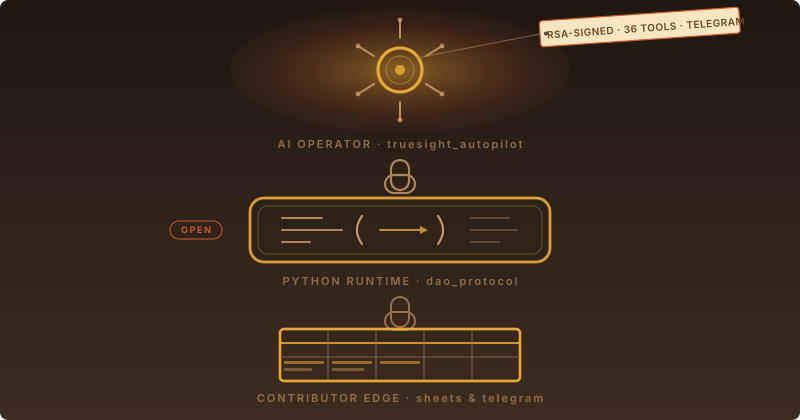

In 2024 we made a promise.
A DAO you could run on a Google Sheet.
No wallet. No gas. No crypto expertise. Just a spreadsheet, with Apps Script doing the bookkeeping and GitHub keeping the audit log.
That promise still holds.
But the spreadsheet grew a Python runtime underneath it. And the runtime grew an AI on top. This is the part nobody planned for, and the part we’re most ready to share.
The runtime grew up first
Once contributors were submitting hundreds of events a week, Apps Script and Google Sheets couldn’t carry the whole load. We needed signed events — so a contribution couldn’t be forged. Atomic dispatch — so a transaction couldn’t land in the ledger without also landing in Telegram. And an API that AI agents could talk to without screen-scraping a spreadsheet.
That’s dao_protocol. A FastAPI service. Python. Open source. You can fork it, host it, and point your own DAO at it. Every endpoint that powers signed-event dispatch behind Edgar is a Python route, replaced one at a time so nothing ever broke for the contributors using the spreadsheet UX they already knew.
The Python SDK that talks to it — dao_client — is the same library every contribution-submitting script, every retail-partner check-in, every AI agent reaches for.
Then the AI showed up
Once you have signed events going into a reflectable spreadsheet ledger, with every script the DAO runs sitting in a public GitHub — an AI agent has everything it needs to operate the place. It can read every input. Dispatch every output. Sign every action.
truesight_autopilot is what we call that AI.
It runs on a small EC2 box. We talk to it over Telegram. It started with 36 tools — Google Drive, Sheets, Docs, multi-account Gmail, AWS read across both of our DAO-contributed cloud accounts, GitHub PRs that auto-promote from draft to ready before merging, PDF generation, QR scanning — and the surface keeps growing, one Python file at a time.
Every action it takes is RSA-signed by a governor first. The same signature scheme contributors use.
There is no AI bypass. The autopilot is just another contributor who happens to be tireless.
Why open-source?
Because the promise we made in 2024 was open infrastructure, not closed infrastructure.
If you’re running a grassroots project and you’ve hit the ceiling of what a spreadsheet alone can do — you can fork this. The runtime is one Python service. The AI is one repo. Adding a new capability to the AI is one Python file (here’s the authoring guide). The contributor UX stays on Sheets and Telegram, just like ours.
We’re not selling you a SaaS. We’re showing you what we built and how it works.
If you build the next one, we’d like to know.
What stayed the same
A volunteer can still walk in, submit a contribution from a phone, and see it land in the ledger inside a minute. That’s the same shape it had on day one. We didn’t trade simplicity for sophistication. We just put sophistication underneath so the simplicity could hold up under more weight.
The spreadsheet is still there. It always will be.
We just made it smarter.
Join the discussion
Share your thoughts in Telegram, Beer Hall, and on the DAO web app.